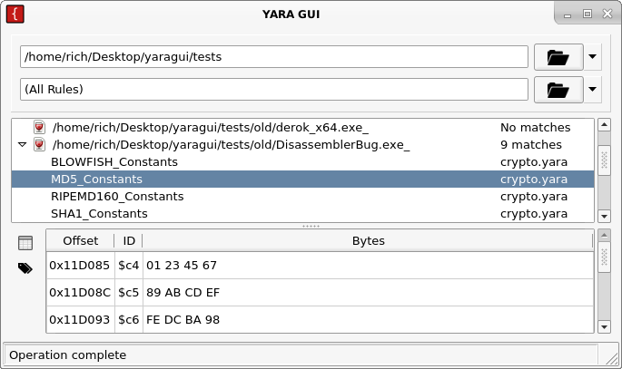

## YARA GUI for Windows

## Features
* Directory scanning
* Compiled rule cache
* Favorite/recent rule menu
* View strings and meta information
* Entropy and data visualization (<a href="graphs.html">details</a>)
## Download
* [YARA GUI 0.2 for Windows (32-bit)](YaraGui02.zip)
## Changes in Version 0.2
* Update to Qt 5.7
* Entropy and data graphs
* Save window size and position
* Fix crash when recompiling rules
* Fix potential threading crash
## License
Free and open-source! See [GitHub repository](https://github.com/sigint9/yaragui)
## Demonstration Video
<iframe width="640" height="360" src="https://www.youtube.com/embed/ee9J9_Oxq4k" frameborder="0" allowfullscreen></iframe>